Linearized AVO Inversion
Quantitative Interpretation of Seismic Amplitudes
School of Earth & Atmospheric Sciences — Georgia Institute of Technology


Linearized AVO Inversion
Quantitative Interpretation of Seismic Amplitudes
Felix J. Herrmann
School of Earth & Atmospheric Sciences — Georgia Institute of Technology
Slides are adapted from Eric Verschuur
Outline
Part I — Acoustic Reflection & Amplitudes
- Factors affecting seismic amplitudes
- Normal-incidence reflection coefficient
- Linearization and impedance formulation
- Non-ray amplitude effects
Part II — Linearized Acoustic Inversion
- Convolutional model
- Matrix formulation: \(\mathbf{d} = \mathbf{W}\mathbf{D}\mathbf{m}\)
- Least-squares inversion for impedance
Part III — Elastic Wave Equation & Zoeppritz
- Elastic wave equation and body waves
- Boundary conditions and Snell’s law
- Zoeppritz equations and their linearization
Part IV — Linearized Convolutional Model
- Background media and their properties
- Ray-parameter-dependent \(R_{PP}\)
- Linearized convolutional model in \(\tau\)-\(p\)
Part V — AVO/AVP Inversion Workflow
- Linear Radon transform and angle gathers
- Relation between Radon amplitudes and reflection coefficients
- Damped least-squares inversion
- The spectral gap
- Practical workflow
Part I — Acoustic Reflection & Amplitudes
What Affects Seismic Amplitudes?
From a ray-theoretical point of view, three factors control the amplitudes of seismic waves:
Geometric spreading — wavefront divergence reduces amplitude with distance
Reflection and transmission coefficients — amplitude partitioning at interfaces, governed by contrast in elastic properties
Attenuation (damping) — energy loss due to absorption and scattering
Transport equation
These amplitude effects are described by the transport equation, the second-order term in the asymptotic ray expansion of the wave equation solution.
Normal-Incidence Acoustic Reflection Coefficient
Consider a planar interface separating two acoustic media with densities \(\rho_1, \rho_2\) and velocities \(c_1, c_2\).
The normal-incidence reflection coefficient is:
\[ \boxed{R = \frac{\rho_2 c_2 - \rho_1 c_1}{\rho_2 c_2 + \rho_1 c_1} = \frac{Z_2 - Z_1}{Z_2 + Z_1}} \]
where the acoustic impedance is \(Z = \rho \, c\).
Tip
The reflection coefficient \(R\) depends only on the impedance contrast across the interface. It ranges from \(-1\) to \(+1\).
Linearization of the Reflection Coefficient
For small impedance contrasts (\(\Delta Z \ll \bar{Z}\)), we write \(Z_2 = \bar{Z} + \tfrac{1}{2}\Delta Z\) and \(Z_1 = \bar{Z} - \tfrac{1}{2}\Delta Z\), where \(\bar{Z} = \tfrac{1}{2}(Z_1 + Z_2)\):
\[ R = \frac{Z_2 - Z_1}{Z_2 + Z_1} = \frac{\Delta Z}{2\bar{Z}} \approx \frac{1}{2}\frac{\Delta Z}{\bar{Z}} \]
Equivalently, since \(\Delta \ln Z \approx \Delta Z / \bar{Z}\) for small contrasts:
\[ \boxed{R \approx \frac{1}{2}\Delta \ln Z} \]
Two equivalent expressions for the linearized acoustic reflection coefficient:
- In terms of impedance contrast: \(R \approx \frac{1}{2}\frac{\Delta Z}{\bar{Z}}\)
- In terms of log-impedance: \(R \approx \frac{1}{2}\Delta \ln Z\)
When Is the Linearized Approximation Valid?
The linearized reflection coefficient \(R \approx \frac{1}{2}\Delta\ln Z\) is a good approximation when:
- The impedance contrast is small: \(|\Delta Z / \bar{Z}| \ll 1\)
- In practice, contrasts of up to about 20% still yield reasonable accuracy
- The linearization fails near critical angles and for large contrasts (e.g., salt–sediment or water–rock interfaces)
Validity condition
The linearized approximation is the foundation of AVO inversion. Its validity depends on the media having small relative contrasts in density and velocity across interfaces.
Non-Ray Amplitude Effects
Beyond the ray-theoretical amplitude factors, several wave-equation effects influence recorded amplitudes:
- Multiple reflections — interfering arrivals from multiple bounces
- Thin-layer effects — showing up as dispersion and apparent damping
- Dispersive surface waves — guided modes with frequency-dependent velocity
- Resonances — constructive interference in layered structures
Note
These effects are not captured by the linearized convolutional model. Accounting for them requires full-waveform modeling or specialized corrections.
Part II — Linearized Acoustic Inversion
The Convolutional Model
The linear convolutional model represents a seismic trace as the convolution of a source wavelet \(w(t)\) with the earth’s reflectivity series:
\[ d(t) = w(t) * r(t) = \sum_i R_i \, a_i \, w(t - t_i) \]
where \(R_i\) is the reflection coefficient at the \(i\)-th interface, \(a_i\) accounts for propagation effects, and \(t_i\) is the two-way traveltime.
Key assumptions:
- Single scattering (no multiples)
- Amplitudes proportional to reflection coefficients
- Known source wavelet
From Reflectivity to Impedance
Using the linearized relation \(R_i \approx \frac{1}{2}\Delta\ln Z_i\), the reflectivity at each interface is the half-derivative of log-impedance:
\[ r_i = \frac{1}{2}\left(\ln Z_{i+1} - \ln Z_i\right) \]
In vector form with \(\mathbf{m} = \begin{pmatrix} \ln Z_1, \ln Z_2, \ldots, \ln Z_N \end{pmatrix}^\top\), we can write:
\[ \mathbf{r} = \frac{1}{2}\mathbf{D}\,\mathbf{m} \]
where \(\mathbf{D}\) is the first-difference matrix:
\[ \mathbf{D} = \begin{pmatrix} -1 & 1 & 0 & \cdots \\ 0 & -1 & 1 & \cdots \\ & & \ddots & \ddots \end{pmatrix} \]
Matrix Formulation: \(\mathbf{d} = \mathbf{A}\,\mathbf{m}\)
The seismic trace is a convolution of the wavelet with reflectivity, represented as:
\[ \mathbf{d} = \mathbf{W}\,\mathbf{r} = \frac{1}{2}\mathbf{W}\,\mathbf{D}\,\mathbf{m} \]
where \(\mathbf{W}\) is the wavelet convolution matrix (Toeplitz), and \(\mathbf{D}\) is the first-difference matrix.
\[ \boxed{\mathbf{d} = \mathbf{A}\,\mathbf{m}, \quad \text{with} \quad \mathbf{A} = \tfrac{1}{2}\mathbf{W}\,\mathbf{D}} \]
Two key matrices
- \(\mathbf{W}\) — the wavelet convolution matrix maps reflectivity to seismic data
- \(\mathbf{D}\) — the derivative matrix maps log-impedance to reflectivity
Together they express the linear relationship between recorded amplitudes and the acoustic medium properties (log-impedance).
Least-Squares Inversion for Impedance
Inverting \(\mathbf{d} = \mathbf{A}\,\mathbf{m}\) via least-squares:
\[ \hat{\mathbf{m}} = \left(\mathbf{A}^\top\mathbf{A}\right)^{-1}\mathbf{A}^\top\mathbf{d} \]
Challenges:
- Potentially unstable (ill-conditioned \(\mathbf{A}^\top\mathbf{A}\))
- No recovery of low-frequency component of impedance (the wavelet is band-limited)
Impedance Inversion with a Background
Approach: start with a low-frequency background model \(\mathbf{m}_0\) and solve for perturbations \(\delta\mathbf{m}\):
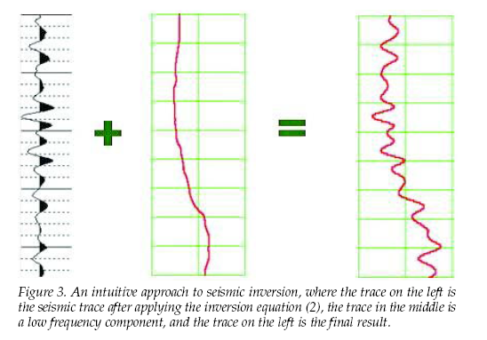
The low-frequency background comes from well logs or velocity analysis, and the band-limited perturbation is inverted from the seismic data.
Application: Marlin Field (Gulf of Mexico)
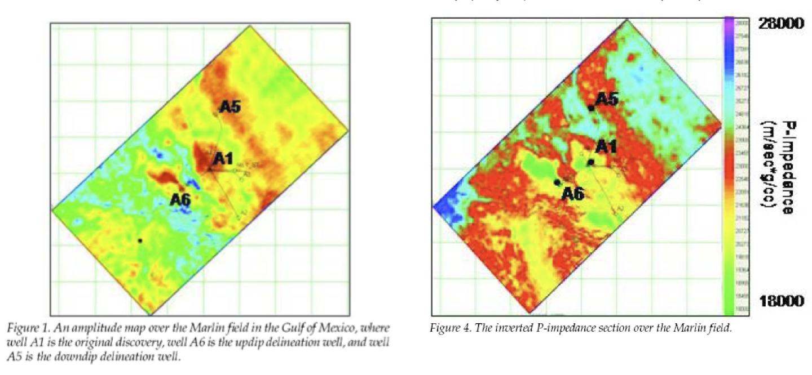
Inverted P-impedance section over the Marlin Field, Gulf of Mexico.
- All wells correlate with amplitude anomalies
- Impedance inversion reveals gas-bearing zones
- From Russell, Hampson, and Bankhead (2006)
Part III — Elastic Wave Equation & Zoeppritz
The Elastic Wave Equation
Hooke’s law for isotropic elastic media relates stress \(\tau_{ij}\) to strain via the Lamé parameters \(\lambda\) and \(\mu\):
\[ \tau_{ij} = \lambda\,\delta_{ij}\,\nabla\cdot\mathbf{u} + \mu\left(\frac{\partial u_i}{\partial x_j} + \frac{\partial u_j}{\partial x_i}\right) \]
Combined with Newton’s second law \(\rho\,\partial^2 u_i / \partial t^2 = \nabla\cdot\boldsymbol{\tau}_i\), we obtain the elastic wave equation:
\[ \boxed{\rho\,\frac{\partial^2\mathbf{u}}{\partial t^2} = (\lambda + \mu)\,\nabla(\nabla\cdot\mathbf{u}) + \mu\,\nabla^2\mathbf{u}} \]
Bulk and Shear Modulus, P- and S-Wave Speeds
The elastic medium is characterized by density \(\rho(\mathbf{r})\), bulk modulus \(K(\mathbf{r})\), and shear modulus \(\mu(\mathbf{r})\).
Compressional (P-wave) velocity:
\[ \alpha = c_P = \sqrt{\frac{K + \frac{4}{3}\mu}{\rho}} = \sqrt{\frac{\lambda + 2\mu}{\rho}} \]
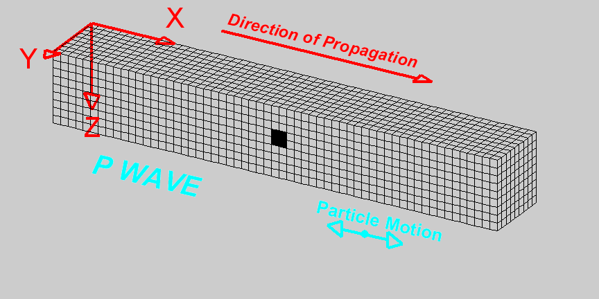
Shear (S-wave) velocity:
\[ \beta = c_S = \sqrt{\frac{\mu}{\rho}} \]
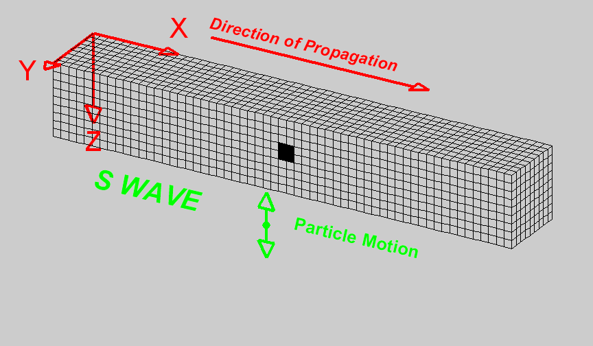
P- and S-Waves from Helmholtz Decomposition
Taking the divergence of the elastic wave equation gives the P-wave equation:
\[ \rho\,\frac{\partial^2\vartheta}{\partial t^2} = (\lambda + 2\mu)\,\nabla^2\vartheta, \quad \vartheta \equiv \nabla\cdot\mathbf{u} \]
Taking the curl gives the S-wave equation:
\[ \rho\,\frac{\partial^2\boldsymbol{\xi}}{\partial t^2} = \mu\,\nabla^2\boldsymbol{\xi}, \quad \boldsymbol{\xi} \equiv \nabla\times\mathbf{u} \]
Key result
P-waves propagate with velocity \(c_P = \sqrt{(\lambda+2\mu)/\rho}\) and involve compressional motion. S-waves propagate with velocity \(c_S = \sqrt{\mu/\rho}\) and involve shear motion. Since \(\lambda + 2\mu > \mu\), we always have \(c_P > c_S\).
Boundary Conditions at an Elastic Interface
At an interface between two elastic layers, the boundary conditions require:
- Continuity of particle velocity \(v_i\) — no slipping or separation
- Continuity of tractions \(\tau_{ij}\,n_j\) — force balance across the interface
These boundary conditions, together with Snell’s law:
\[ \frac{\sin\theta_{P1}}{c_{P1}} = \frac{\sin\theta_{S1}}{c_{S1}} = \frac{\sin\theta_{P2}}{c_{P2}} = \frac{\sin\theta_{S2}}{c_{S2}} = p \quad \text{(ray parameter)} \]
lead to a system of equations coupling the amplitudes of all reflected and transmitted waves.
Snell’s Law and Mode Conversion
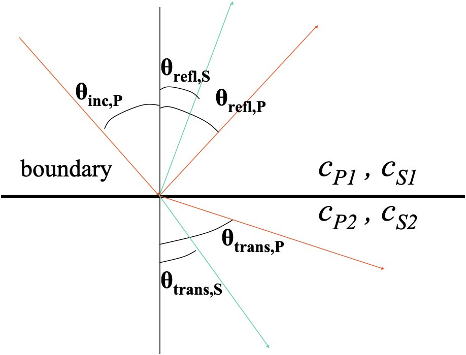
An incident P-wave at a solid-solid interface generates four waves:
- Reflected P-wave (angle \(\theta_{P1}^{\text{refl}}\))
- Reflected S-wave (angle \(\theta_{S1}^{\text{refl}}\))
- Transmitted P-wave (angle \(\theta_{P2}^{\text{trans}}\))
- Transmitted S-wave (angle \(\theta_{S2}^{\text{trans}}\))
All angles are related through Snell’s law via the common ray parameter \(p\).
Reflection and Transmission Coefficients
For an interface between layers with \((\rho_1, c_{P1}, c_{S1})\) and \((\rho_2, c_{P2}, c_{S2})\), we have eight coefficients:
Reflection coefficients:
- \(R_{PP}\) — P-to-P reflection
- \(R_{PS}\) — P-to-S reflection
- \(R_{SP}\) — S-to-P reflection
- \(R_{SS}\) — S-to-S reflection
Transmission coefficients:
- \(T_{PP}\) — P-to-P transmission
- \(T_{PS}\) — P-to-S transmission
- \(T_{SP}\) — S-to-P transmission
- \(T_{SS}\) — S-to-S transmission
These coefficients are functions of angle of incidence (or ray parameter \(p\)) and the six medium parameters \(\rho_1, c_{P1}, c_{S1}, \rho_2, c_{P2}, c_{S2}\).
The Zoeppritz Equations
The exact expressions for \(R_{PP}\), \(R_{PS_V}\), \(T_{PP}\), \(T_{PS_V}\) (and similarly for S-wave incidence) in terms of \(\rho_1, \rho_2, \alpha_1, \alpha_2, \beta_1, \beta_2\) and angle of incidence are called the Zoeppritz equations (Zoeppritz 1919).
These equations express each reflection and transmission coefficient as a nonlinear function of \(\rho_1, \rho_2, \alpha_1, \alpha_2, \beta_1, \beta_2\) and the angle of incidence. For small contrasts across the interface, the Zoeppritz equations can be linearized in the logarithmic perturbations \(\Delta\ln\rho\), \(\Delta\ln\alpha\), and \(\Delta\ln\beta\).
Linearization of Zoeppritz for Small Contrasts
For small contrasts, the Zoeppritz equations can be linearized in \(\Delta\ln\rho\), \(\Delta\ln\alpha\), and \(\Delta\ln\beta\) (Aki and Richards 1980, 2002).
For contrasts of order \(\delta \ll 1\), at non-zero, pre-critical angles:
\[ \begin{aligned} R_{PP} &= O(\delta), \quad R_{PS_V} = O(\delta), \quad T_{PP} = O(1), \quad T_{PS_V} = O(\delta) \\ R_{S_VS_V} &= O(\delta), \quad R_{S_VP} = O(\delta), \quad T_{S_VS_V} = O(1), \quad T_{S_VP} = O(\delta) \end{aligned} \]
Key observation
In reflection recordings over low-contrast media, the leading amplitudes are \(O(\delta)\). These arrivals have been reflected only once and have not been mode-converted on transmission. Mode conversion may occur upon reflection (\(R_{PS}\), \(R_{SP}\)).
Part IV — Linearized Convolutional Model
The Background Medium
In the linearized model, traveltimes \(t_i\) are computed in a background medium with slowly varying properties \(\rho_0(z)\), \(\alpha_0(z)\), \(\beta_0(z)\).
Requirements for the background medium:
- Must accurately match the traveltimes in the real medium
- Must describe the propagation factors (geometric spreading, ray bending)
- Should be smooth — no sharp discontinuities
- Obtained from velocity analysis, well logs, or tomography
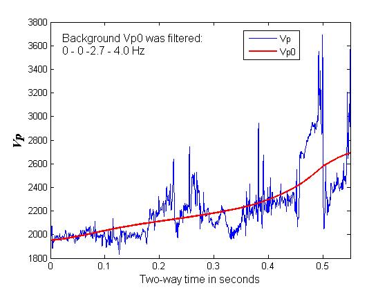
Linearized \(R_{PP}\) in the Ray-Parameter Domain
Using the plane-wave decomposition, the linearized data model in the \(\tau\)-\(p\) domain is:
\[ \hat{s}(p;\tau) = \sum_i R_i(p)\,w\!\left[\tau - t_i(p)\right] \]
where \(p = \sin\theta / \alpha_0\) is the horizontal ray parameter and \(t_i(p) = \int_0^{z_i} \frac{\sqrt{1 - p^2\alpha_0^2}}{\alpha_0}\,dz\).
The linearized P-to-P reflection coefficient (Aki–Richards approximation, (Aki and Richards 2002; Shuey 1985)) is:
\[ \boxed{R_{PP}(p) = \frac{1}{2}\left(1 - 4\beta_0^2 p^2\right)\Delta\ln\rho + \frac{1}{2}\frac{1}{1 - \alpha_0^2 p^2}\Delta\ln\alpha - 4\beta_0^2 p^2\,\Delta\ln\beta} \]
The property contrasts across the \(i\)-th interface are: \(\Delta\ln\rho_i\), \(\Delta\ln\alpha_i\), and \(\Delta\ln\beta_i\).
Structure of the Linearized \(R_{PP}\)
The Aki–Richards \(R_{PP}\) can be written as a linear combination of three contrasts with \(p\)-dependent weights:
\[ R_{PP}(p) = w_\rho(p)\,\Delta\ln\rho + w_\alpha(p)\,\Delta\ln\alpha + w_\beta(p)\,\Delta\ln\beta \]
where the weights are:
| Weight | Expression | At \(p=0\) (normal incidence) |
|---|---|---|
| \(w_\rho(p)\) | \(\frac{1}{2}(1 - 4\beta_0^2 p^2)\) | \(\frac{1}{2}\) |
| \(w_\alpha(p)\) | \(\frac{1}{2}(1 - \alpha_0^2 p^2)^{-1}\) | \(\frac{1}{2}\) |
| \(w_\beta(p)\) | \(-4\beta_0^2 p^2\) | \(0\) |
Note
At normal incidence (\(p=0\)), \(R_{PP} = \frac{1}{2}(\Delta\ln\rho + \Delta\ln\alpha) = \frac{1}{2}\Delta\ln Z_P\), recovering the acoustic result. The shear information enters only at oblique incidence.
Linearized Convolutional Model in \(\tau\)-\(p\)
For each ray parameter \(p_j\) (\(j = 1, \ldots, N_p\)), the data at the \(i\)-th interface is:
\[ \hat{s}(p_j; \tau) = \sum_i \left[w_\rho(p_j)\,\Delta\ln\rho_i + w_\alpha(p_j)\,\Delta\ln\alpha_i + w_\beta(p_j)\,\Delta\ln\beta_i\right] w(\tau - t_i) \]
In matrix form for all ray parameters and interfaces:
\[ \boxed{\hat{\mathbf{s}} = \mathbf{M}\,\mathbf{x}} \]
where:
- \(\hat{\mathbf{s}}\) is the vector of \(\tau\)-\(p\) data (for all \(p\) values)
- \(\mathbf{M}\) encodes the wavelet convolution and the \(p\)-dependent weighting
- \(\mathbf{x} = \begin{pmatrix} \Delta\ln\rho(z) \\ \Delta\ln\alpha(z) \\ \Delta\ln\beta(z) \end{pmatrix}\) is the vector of property contrasts
Part V — AVO/AVP Inversion Workflow
AVP Inversion — Overview
The \(\tau\)-\(p\) data model from the previous section relates the Radon-domain amplitudes to the linearized reflection coefficients:
\[ \hat{s}(p;\tau) = \sum_i R_i(p)\,w[\tau - t_i(p)] \]
where \(R_{PP}(p)\) is the Aki–Richards linearized P-to-P reflection coefficient — a linear combination of \(\Delta\ln\rho\), \(\Delta\ln\alpha\), and \(\Delta\ln\beta\) with \(p\)-dependent weights. The plane-wave decomposition via the linear Radon transform provides the data in the required \(\tau\)-\(p\) domain, linking recorded amplitudes directly to subsurface property contrasts.
The Linear Radon Transform
The linear Radon transform (\(\tau\)-\(p\) transform) maps data from the \(x\)-\(t\) domain to the \(\tau\)-\(p\) domain:
\[ m(p, \tau) = \int_{-\infty}^{+\infty} d(x, t = \tau + px)\,dx \]
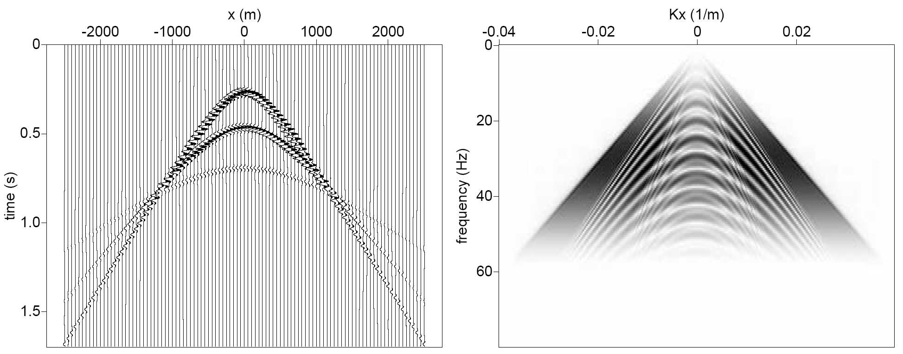
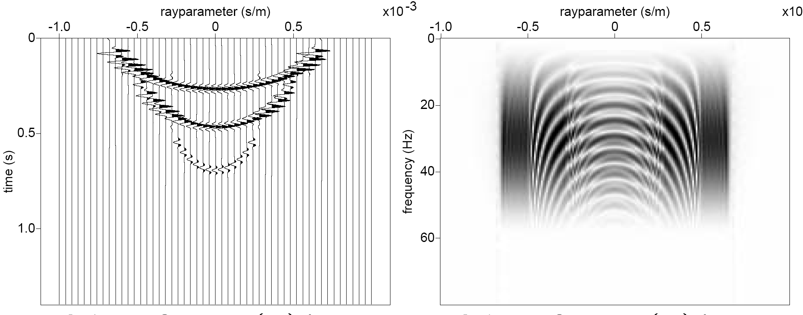
One point in the Radon domain \(m(p,\tau)\) is obtained by stacking the input data along a straight line \(t = \tau + px\).
From Shot Records to Angle Gathers
The AVP inversion workflow involves three stages:
Back-propagation — surface data \(\rightarrow\) virtual source/receiver records at depth: \(\;d(x,t) \rightarrow d_{\text{virtual}}(x,t;z)\)
Radon transform + imaging — form \(\tau\)-\(p\) gathers at each image point: \(\;d_{\text{virtual}} \rightarrow \hat{s}(p,\tau)\)
AVP inversion — invert \(\tau\)-\(p\) amplitudes for property contrasts: \(\;\hat{s} \rightarrow \Delta\ln\rho,\;\Delta\ln\alpha,\;\Delta\ln\beta\)
Radon Amplitudes and Reflection Coefficients
After back-propagation and Radon transform, the focused amplitudes approximate the plane-wave reflection coefficient:
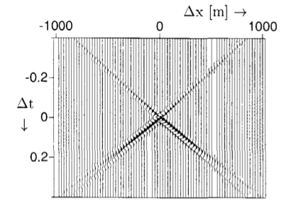
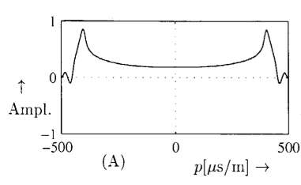
Note
After back-propagation, the focused point in \(x\)-\(t\) maps to a focused point in \(\tau\)-\(p\), where the amplitudes approximate the reflection coefficients \(R_i(p)\) convolved with a stretched wavelet.
Least-Squares Linear Inversion
Given the forward model \(\hat{\mathbf{s}} = \mathbf{M}\,\mathbf{x}\), the least-squares solution is:
\[ \hat{\mathbf{x}} = \left(\mathbf{M}^\top\mathbf{M}\right)^{-1}\mathbf{M}^\top\hat{\mathbf{s}} \]
where \(\mathbf{x} = (\Delta\ln\rho,\;\Delta\ln\alpha,\;\Delta\ln\beta)^\top\) stacked over all \(N_z\) depth points.
The system has \(3N_z\) unknowns (\(\Delta\ln\rho\), \(\Delta\ln\alpha\), \(\Delta\ln\beta\) at each of \(N_z\) depth points) and \(N_p \times N_z\) data samples.
- When \(N_p \geq 3\), the system is overdetermined in the \(p\)-direction
- But \(\mathbf{M}^\top\mathbf{M}\) may still be ill-conditioned, requiring regularization
Damped Least-Squares Inversion
For damped least-squares inversion, we add a regularization term:
\[ \boxed{\hat{\mathbf{x}} = \left(\mathbf{M}^\top\mathbf{M} + \boldsymbol{\varepsilon}\right)^{-1}\mathbf{M}^\top\hat{\mathbf{s}}} \]
where \(\boldsymbol{\varepsilon} = \text{diag}(\varepsilon_\rho\,\mathbf{I}_{N_z},\; \varepsilon_\alpha\,\mathbf{I}_{N_z},\; \varepsilon_\beta\,\mathbf{I}_{N_z})\).
Why is damping needed?
For large systems, the inversion result depends strongly on the damping applied. Different damping for \(\rho\), \(\alpha\), \(\beta\) reflects our different confidence in estimating each parameter. Density is typically the hardest to resolve.
Pre-Conditioned Least-Squares Inversion
With a pre-conditioner \(\mathbf{P}\) that normalizes the columns of \(\mathbf{M}\):
\[ \hat{\mathbf{x}} = \left(\mathbf{P}\,\mathbf{M}^\top\mathbf{M} + \boldsymbol{\varepsilon}\right)^{-1}\mathbf{P}\,\mathbf{M}^\top\hat{\mathbf{s}} \]
Here \(\mathbf{P}\,\mathbf{M}^\top\mathbf{M}\) is a correlation-like matrix with ones on the diagonal, ensuring balanced sensitivity across the three parameter classes.
Note
Pre-conditioning prevents parameters with larger sensitivity (e.g., \(\alpha\)) from dominating the inversion at the expense of less-sensitive parameters (e.g., \(\rho\)).
Recovering Absolute Properties
The inversion yields contrasts \(\Delta\ln\rho_i\), \(\Delta\ln\alpha_i\), \(\Delta\ln\beta_i\) at each interface. To obtain absolute property values, we accumulate contrasts on top of the background model:
\[ \ln\rho(z) = \ln\rho_0(z) + \sum_i \Delta\ln\rho_i \]
\[ \ln\alpha(z) = \ln\alpha_0(z) + \sum_i \Delta\ln\alpha_i, \quad \ln\beta(z) = \ln\beta_0(z) + \sum_i \Delta\ln\beta_i \]
Note
The quality of the absolute property estimate depends critically on the accuracy of the background model \(\rho_0(z)\), \(\alpha_0(z)\), \(\beta_0(z)\).
The Spectral Gap
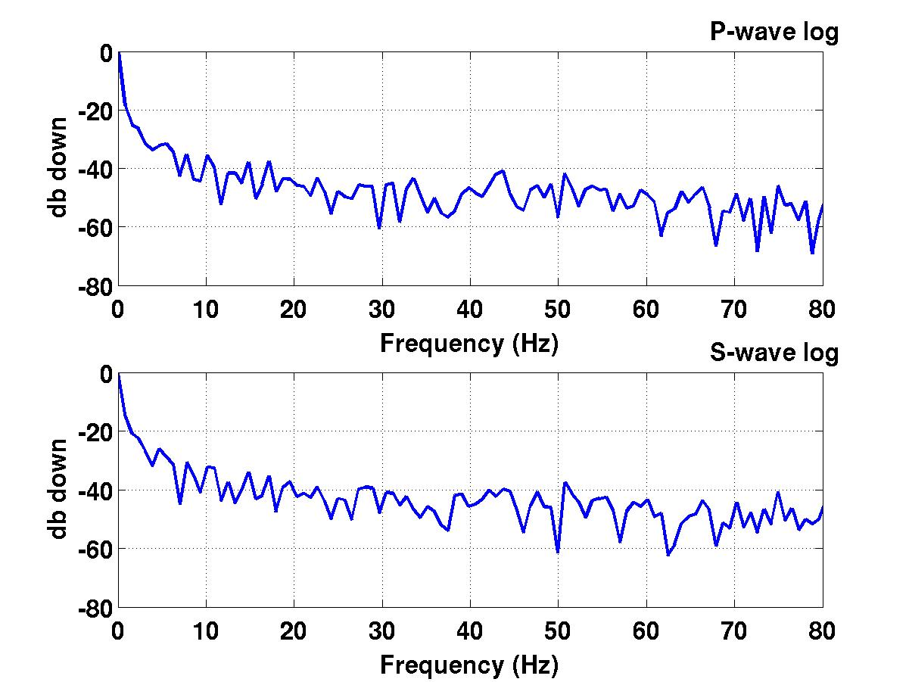
With linear imaging we cannot bridge the spectral gap between:
- The low-frequency content of the background model
- The band-limited seismic amplitudes
. . .
The gap arises because the seismic wavelet has no energy at very low frequencies.
. . .
Important
Only nonlinear inversion (e.g., with a sparseness constraint) or additional information (well logs) can bridge this gap.
Synthetic Example: 1.5D Layered Model
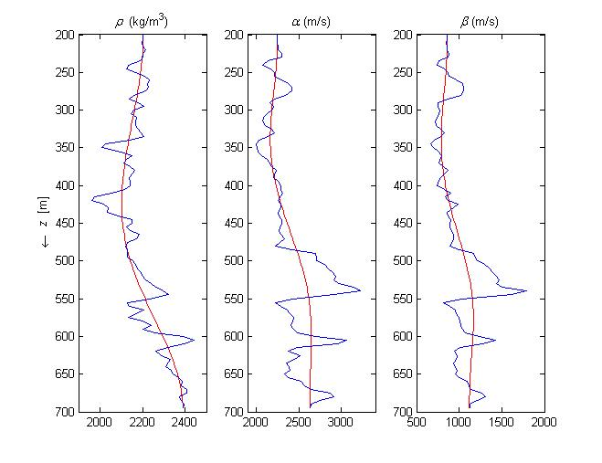
Horizontally layered model with smooth curves representing the background model.
. . .
- Source: zero-phase wavelet with realistic bandwidth
- Inversion in the \(\tau\)-\(p\) domain
- Compare predicted vs. actual properties
Band-Limited vs. Broadband Inversion Results
Band-limited result
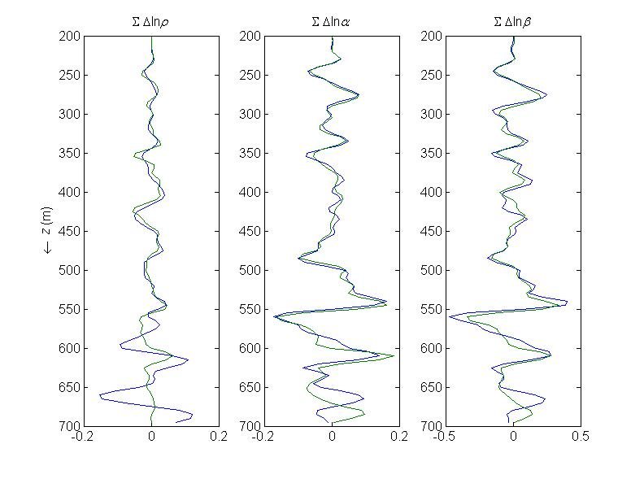
Predicted (green) vs. actual (blue) band-limited log properties. Spatial band-limitation is derived from the source wavelet.
Broadband result
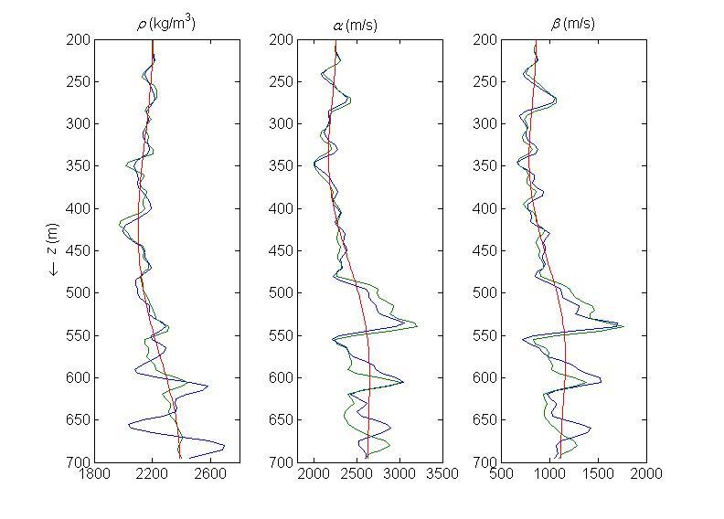
Adding band-limited predictions to background values. Note discrepancies due to the spectral gap.
Low-Contrast Validation — Model & Data
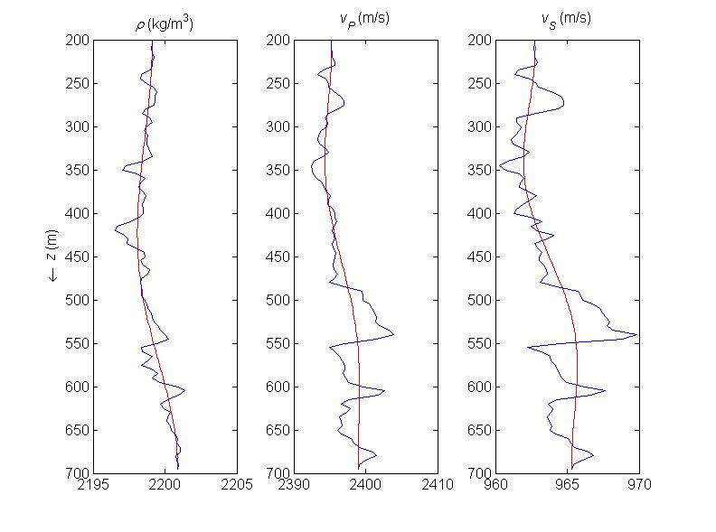
Low-contrast model (0.01\(\times\) real contrasts) with \(\rho\), \(v_P\), \(v_S\) vs. depth. Smooth red curves show the background model.
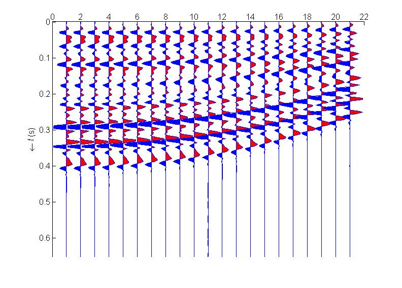
\(\tau\)-\(p\) Radon-domain data for the low-contrast model, showing the amplitude-versus-ray-parameter variation.
Low-Contrast Validation — Inversion Results
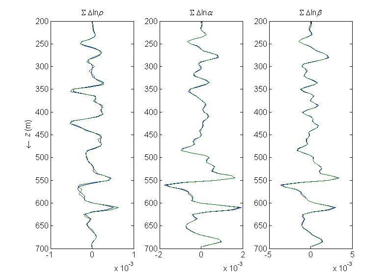
For very low contrasts (0.01\(\times\) real), the linearized inversion performs excellently — validating the method.
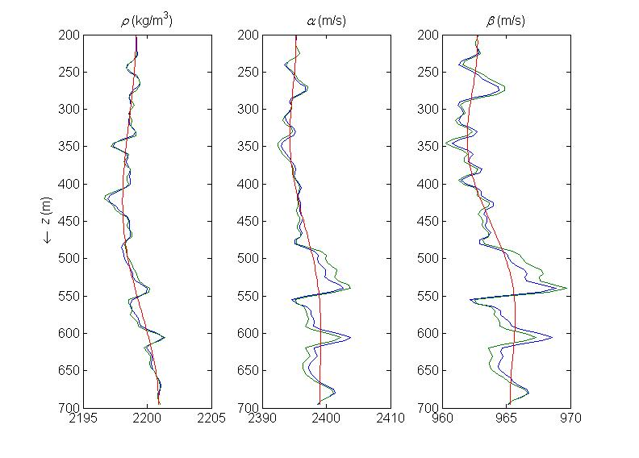
Even with near-perfect linear inversion, the spectral gap still causes discrepancies in the broadband result.
Real Data Example
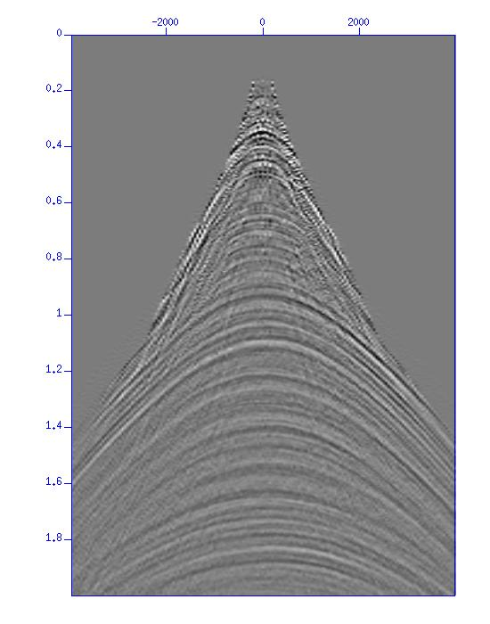
Input processed surface shot record and stacked section.
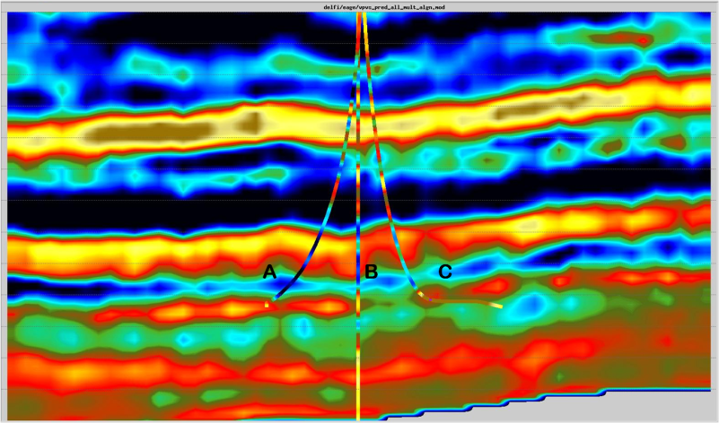
Linear elastic inversion results of redatumed data at top of target interval. (MSc thesis work by Xander Staal)
Practical AVP Inversion Workflow — Data Preparation
The complete workflow for linearized AVO/AVP inversion:
- Build background model — smooth \(\rho_0(z)\), \(\alpha_0(z)\), \(\beta_0(z)\) from well logs and velocity analysis
- Preprocess data — remove multiples, correct for geometric spreading and attenuation
- Back-propagate — redatum surface data to target level using background model
- Apply linear Radon transform — decompose into plane waves (\(\tau\)-\(p\) domain)
Practical AVP Inversion Workflow — Inversion & Interpretation
- Form the forward operator \(\mathbf{M}\) — using linearized \(R_{PP}(p)\) and the source wavelet
- Invert — solve \(\hat{\mathbf{x}} = (\mathbf{M}^\top\mathbf{M} + \boldsymbol{\varepsilon})^{-1}\mathbf{M}^\top\hat{\mathbf{s}}\) for contrasts \(\Delta\ln\rho\), \(\Delta\ln\alpha\), \(\Delta\ln\beta\)
- Reconstruct absolute properties — add contrasts to background model
- Interpret — use recovered \(\rho\), \(\alpha\), \(\beta\) (or derived quantities like Poisson’s ratio) for reservoir characterization
Summary
Acoustic foundations:
- Three factors affect amplitudes: geometric spreading, R/T coefficients, attenuation
- Linearized \(R \approx \frac{1}{2}\Delta\ln Z\) is valid for small contrasts
- The convolutional model \(\mathbf{d} = \mathbf{W}\mathbf{D}\mathbf{m}\) relates data to log-impedance
Elastic theory:
- Boundary conditions give Zoeppritz equations for \(R_{PP}\), \(R_{PS}\), \(T_{PP}\), etc.
- Linearization for small \(\delta\): reflections are \(O(\delta)\), transmissions \(O(1)\)
- \(R_{PP}(p)\) depends linearly on \(\Delta\ln\rho\), \(\Delta\ln\alpha\), \(\Delta\ln\beta\)
AVP inversion:
- Linear Radon transform decomposes data into plane waves
- Radon-domain amplitudes \(\approx\) linearized reflection coefficients
- Damped least-squares inversion recovers property contrasts
- Damping is needed due to ill-conditioning, especially for density
- The spectral gap limits recovery of absolute properties — only nonlinear methods can bridge it
- Background model quality is critical for the final result
References
This lecture was prepared with the assistance of Claude (Anthropic) and validated by Felix J. Herrmann.
This work is licensed under a Creative Commons Attribution-NonCommercial-ShareAlike 4.0 International License.